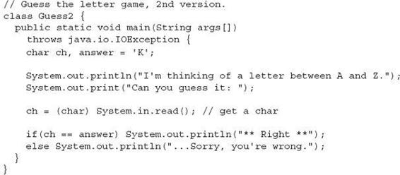
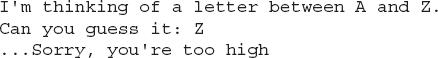
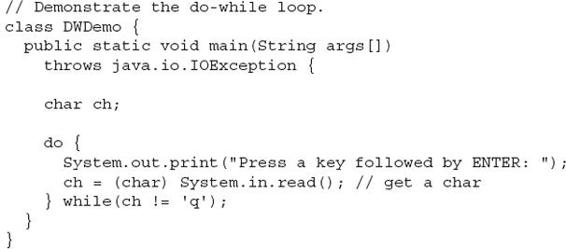
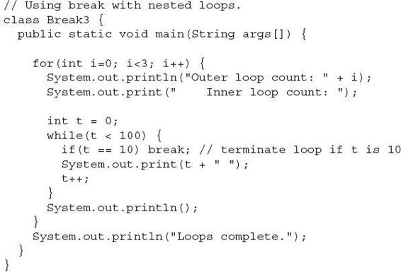
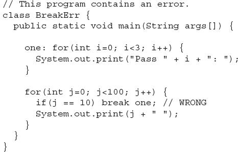
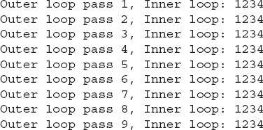

Chapter 3
Program Control Statements
Key Skills & Concepts
 Input characters from the keyboard
Input characters from the keyboard Know the complete form of the if statement
Use the switch statement
Know the complete form of the for loop
Use the while loop
Use the do-while loop
Use break to exit a loop
Use break as a form of goto
Apply continue
Nest loops
In this chapter, you will learn about the statements that control a program’s flow of execution. There are three categories of program control statements: selection statements, which include the if and the switch; iteration statements, which include the for, while, and do-while loops; and jump statements, which include break, continue, and return. Except for return, which is discussed later in this book, the remaining control statements, including the if and for statements to which you have already had a brief introduction, are examined in detail here. The chapter begins by explaining how to perform some simple keyboard input.
Input Characters from the Keyboard
Before examining Java’s control statements, we will make a short digression that will allow you to begin writing interactive programs. Up to this point, the sample programs in this book have displayed information to the user, but they have not received information from the user. Thus, you have been using console output, but not console (keyboard) input. The main reason for this is that Java’s input capabilities rely on or make use of features not discussed until later in this book. Also, most real-world Java programs and applets will be graphical and window based, not console based. For these reasons, not much use of console input is found in this book. However, there is one type of console input that is relatively easy to use: reading a character from the keyboard. Since several of the examples in this chapter will make use of this feature, it is discussed here.
To read a character from the keyboard, we will use System.in.read( ). System.in is the complement to System.out. It is the input object attached to the keyboard. The read( ) method waits until the user presses a key and then returns the result. The character is returned as an integer, so it must be cast into a char to assign it to a char variable. By default, console input is line buffered. Here, the term buffer refers to a small portion of memory that is used to hold the characters before they are read by your program. In this case, the buffer holds a complete line of text. As a result, you must press ENTER before any character that you type will be sent to your program. Here is a program that reads a character from the keyboard:
Here is a sample run:
In the program, notice that main( ) begins like this:
Because System.in.read( ) is being used, the program must specify the throws java.io.IOException clause. This line is necessary to handle input errors. It is part of Java’s exception handling mechanism, which is discussed in Chapter 9. For now, don’t worry about its precise meaning.
The fact that System.in is line buffered is a source of annoyance at times. When you press ENTER, a carriage return, line feed sequence is entered into the input stream. Furthermore, these characters are left pending in the input buffer until you read them. Thus, for some applications, you may need to remove them (by reading them) before the next input operation. You will see an example of this later in this chapter.
The if Statement
Chapter 1 introduced the if statement. It is examined in detail here. The complete form of the if statement is
if(condition) statement;
else statement;
where the targets of the if and else are single statements. The else clause is optional. The targets of both the if and else can be blocks of statements. The general form of the if, using blocks of statements, is
If the conditional expression is true, the target of the if will be executed; otherwise, if it exists, the target of the else will be executed. At no time will both of them be executed. The conditional expression controlling the if must produce a boolean result.
To demonstrate the if (and several other control statements), we will create and develop a simple computerized guessing game that would be suitable for young children. In the first version of the game, the program asks the player for a letter between A and Z. If the player presses the correct letter on the keyboard, the program responds by printing the message ** Right **. The program is shown here:
This program prompts the player and then reads a character from the keyboard. Using an if statement, it then checks that character against the answer, which is K in this case. If K was entered, the message is displayed. When you try this program, remember that the K must be entered in uppercase.
Taking the guessing game further, the next version uses the else to print a message when the wrong letter is picked.

Nested ifs
A nested
if is an if statement that is the target of another if or else. Nested ifs are very common in programming. The main thing to remember about nested ifs in Java is that an else statement always refers to the nearest if statement that is within the same block as the else and not already associated with an else. Here is an example:
As the comments indicate, the final else is not associated with if(j < 20), because it is not in the same block (even though it is the nearest if without an else). Rather, the final else is associated with if(i == 10). The inner else refers to if(k > 100), because it is the closest if within the same block.
You can use a nested if to add a further improvement to the guessing game. This addition provides the player with feedback about a wrong guess.
A sample run is shown here:

The if-else-if Ladder
A common programming construct that is based upon the nested if is the if-else-if
ladder. It looks like this:
The conditional expressions are evaluated from the top downward. As soon as a true condition is found, the statement associated with it is executed, and the rest of the ladder is bypassed. If none of the conditions are true, the final else statement will be executed. The final else often acts as a default condition; that is, if all other conditional tests fail, the last else statement is performed. If there is no final else and all other conditions are false, no action will take place.
The following program demonstrates the if-else-if ladder:
The program produces the following output:
As you can see, the default else is executed only if none of the preceding if statements succeeds.
The switch Statement
The second of Java’s selection statements is the switch. The switch provides for a multiway branch. Thus, it enables a program to select among several alternatives. Although a series of nested if statements can perform multiway tests, for many situations the switch is a more efficient approach. It works like this: the value of an expression is successively tested against a list of constants. When a match is found, the statement sequence associated with that match is executed. The general form of the switch statement is
For versions of Java prior to JDK 7, the expression controlling the switch must be of type byte, short, int, char, or an enumeration. (Enumerations are described in Chapter 12.) Beginning with JDK 7, expression can also be of type String. This means that modern versions of Java can use a string to control a switch. (This technique is demonstrated in Chapter 5, when String is described.) Frequently, the expression controlling a switch is simply a variable rather than a larger expression.
Each value specified in the case statements must be a unique constant expression (such as a literal value). Duplicate case values are not allowed. The type of each value must be compatible with the type of expression.
The default statement sequence is executed if no case constant matches the expression. The default is optional; if it is not present, no action takes place if all matches fail. When a match is found, the statements associated with that case are executed until the break is encountered or, in the case of default or the last case, until the end of the switch is reached.
The following program demonstrates the switch:
The output produced by this program is shown here:
As you can see, each time through the loop, the statements associated with the case constant that matches i are executed. All others are bypassed. When i is five or greater, no case statements match, so the default statement is executed.
Technically, the break statement is optional, although most applications of the switch will use it. When encountered within the statement sequence of a case, the break statement causes program flow to exit from the entire switch statement and resume at the next statement outside the switch. However, if a break statement does not end the statement sequence associated with a case, then all the statements at and following the matching case will be executed until a break (or the end of the switch) is encountered.
For example, study the following program carefully. Before looking at the output, can you figure out what it will display on the screen?
This program displays the following output:
As this program illustrates, execution will continue into the next case if no break statement is present.
You can have empty cases, as shown in this example:
In this fragment, if i has the value 1, 2, or 3, the first println( ) statement executes. If it is 4, the second println( ) statement executes. The “stacking” of cases, as shown in this example, is common when several cases share common code.
Nested switch Statements
It is possible to have a switch as part of the statement sequence of an outer switch. This is called a nested switch. Even if the case constants of the inner and outer switch contain common values, no conflicts will arise. For example, the following code fragment is perfectly acceptable:
| Try This 3-1 |
Start Building a Java Help System |
This project builds a simple help system that displays the syntax for the Java control statements. The program displays a menu containing the control statements and then waits for you to choose one. After one is chosen, the syntax of the statement is displayed. In this first version of the program, help is available for only the if and switch statements. The other control statements are added in subsequent projects.
1. Create a file called Help.java.
2. The program begins by displaying the following menu:
To accomplish this, you will use the statement sequence shown here:
3. Next, the program obtains the user’s selection by calling System.in.read( ), as shown here:
4. Once the selection has been obtained, the program uses the switch statement shown here to display the syntax for the selected statement.
Notice how the default clause catches invalid choices. For example, if the user enters 3, no case constants will match, causing the default sequence to execute.
5. Here is the entire Help.java program listing:
6. Here is a sample run.
The for Loop
You have been using a simple form of the for loop since Chapter 1. You might be surprised at just how powerful and flexible the for loop is. Let’s begin by reviewing the basics, starting with the most traditional forms of the for.
The general form of the for loop for repeating a single statement is
for(initialization; condition; iteration) statement;
For repeating a block, the general form is
Ask the Expert
Q: Under what conditions should I use an if-else-if ladder rather than a switch when coding a multiway branch?
A: In general, use an if-else-if ladder when the conditions controlling the selection process do not rely upon a single value. For example, consider the following if-else-if sequence:
This sequence cannot be recoded into a switch because all three conditions involve different variables—and differing types. What variable would control the switch? Also, you will need to use an if-else-if ladder when testing floating-point values or other objects that are not of types valid for use in a switch expression.
The initialization is usually an assignment statement that sets the initial value of the loop control variable, which acts as the counter that controls the loop. The condition is a Boolean expression that determines whether or not the loop will repeat. The iteration expression defines the amount by which the loop control variable will change each time the loop is repeated. Notice that these three major sections of the loop must be separated by semicolons. The for loop will continue to execute as long as the condition tests true. Once the condition becomes false, the loop will exit, and program execution will resume on the statement following the for.
The following program uses a for loop to print the square roots of the numbers between 1 and 99. It also displays the rounding error present for each square root.
Notice that the rounding error is computed by squaring the square root of each number. This result is then subtracted from the original number, thus yielding the rounding error.
The for loop can proceed in a positive or negative fashion, and it can change the loop control variable by any amount. For example, the following program prints the numbers 100 to –95, in decrements of 5:
An important point about for loops is that the conditional expression is always tested at the top of the loop. This means that the code inside the loop may not be executed at all if the condition is false to begin with. Here is an example:
This loop will never execute because its control variable, count, is greater than 5 when the loop is first entered. This makes the conditional expression, count < 5, false from the outset; thus, not even one iteration of the loop will occur.
Some Variations on the for Loop
The for is one of the most versatile statements in the Java language because it allows a wide range of variations. For example, multiple loop control variables can be used. Consider the following program:
The output from the program is shown here:
Here, commas separate the two initialization statements and the two iteration expressions. When the loop begins, both i and j are initialized. Each time the loop repeats, i is incremented and j is decremented. Multiple loop control variables are often convenient and can simplify certain algorithms. You can have any number of initialization and iteration statements, but in practice, more than two or three make the for loop unwieldy.
The condition controlling the loop can be any valid Boolean expression. It does not need to involve the loop control variable. In the next example, the loop continues to execute until the user types the letter S at the keyboard:
Missing Pieces
Some interesting for loop variations are created by leaving pieces of the loop definition empty. In Java, it is possible for any or all of the initialization, condition, or iteration portions of the for loop to be blank. For example, consider the following program:
Here, the iteration expression of the for is empty. Instead, the loop control variable i is incremented inside the body of the loop. This means that each time the loop repeats, i is tested to see whether it equals 10, but no further action takes place. Of course, since i is still incremented within the body of the loop, the loop runs normally, displaying the following output:
In the next example, the initialization portion is also moved out of the for:
In this version, i is initialized before the loop begins, rather than as part of the for. Normally, you will want to initialize the loop control variable inside the for. Placing the initialization outside of the loop is generally done only when the initial value is derived through a complex process that does not lend itself to containment inside the for statement.
The Infinite Loop
You can create an infinite loop (a loop that never terminates) using the for by leaving the conditional expression empty. For example, the following fragment shows the way most Java programmers create an infinite loop:
This loop will run forever. Although there are some programming tasks, such as operating system command processors, that require an infinite loop, most “infinite loops” are really just loops with special termination requirements. Near the end of this chapter, you will see how to halt a loop of this type. (Hint: It’s done using the break statement.)
Loops with No Body
In Java, the body associated with a for loop (or any other loop) can be empty. This is because a null statement is syntactically valid. Body-less loops are often useful. For example, the following program uses one to sum the numbers 1 through 5:
The output from the program is shown here:
Notice that the summation process is handled entirely within the for statement, and no body is needed. Pay special attention to the iteration expression:
Don’t be intimidated by statements like this. They are common in professionally written Java programs and are easy to understand if you break them down into their parts. In other words, this statement says, “Add to sum the value of sum plus i, then increment i.” Thus, it is the same as this sequence of statements:
Declaring Loop Control Variables Inside the for Loop
Often the variable that controls a for loop is needed only for the purposes of the loop and is not used elsewhere. When this is the case, it is possible to declare the variable inside the initialization portion of the for. For example, the following program computes both the summation and the factorial of the numbers 1 through 5. It declares its loop control variable i inside the for.
When you declare a variable inside a for loop, there is one important point to remember: the scope of that variable ends when the for statement does. (That is, the scope of the variable is limited to the for loop.) Outside the for loop, the variable will cease to exist. Thus, in the preceding example, i is not accessible outside the for loop. If you need to use the loop control variable elsewhere in your program, you will not be able to declare it inside the for loop.
Before moving on, you might want to experiment with your own variations on the for loop. As you will find, it is a fascinating loop.
The Enhanced for Loop
Relatively recently, a new form of the for loop, called the enhanced
for, was added to Java. The enhanced for provides a streamlined way to cycle through the contents of a collection of objects, such as an array. The enhanced for loop is discussed in Chapter 5, after arrays have been introduced.
The while Loop
Another of Java’s loops is the while. The general form of the while loop is
while(condition) statement;
where statement may be a single statement or a block of statements, and condition defines the condition that controls the loop. The condition may be any valid Boolean expression. The loop repeats while the condition is true. When the condition becomes false, program control passes to the line immediately following the loop.
Here is a simple example in which a while is used to print the alphabet:
Here, ch is initialized to the letter a. Each time through the loop, ch is output and then incremented. This process continues until ch is greater than z.
As with the for loop, the while checks the conditional expression at the top of the loop, which means that the loop code may not execute at all. This eliminates the need for performing a separate test before the loop. The following program illustrates this characteristic of the while loop. It computes the integer powers of 2, from 0 to 9.
The output from the program is shown here:
Notice that the while loop executes only when e is greater than 0. Thus, when e is zero, as it is in the first iteration of the for loop, the while loop is skipped.
Ask the Expert
Q: Given the flexibility inherent in all of Java’s loops, what criteria should I use when selecting a loop? That is, how do I choose the right loop for a specific job?
A: Use a for loop when performing a known number of iterations. Use the do-while when you need a loop that will always perform at least one iteration. The while is best used when the loop will repeat an unknown number of times.
The do-while Loop
The last of Java’s loops is the do-while. Unlike the for and the while loops, in which the condition is tested at the top of the loop, the do-while loop checks its condition at the bottom of the loop. This means that a do-while loop will always execute at least once. The general form of the do-while loop is
Although the braces are not necessary when only one statement is present, they are often used to improve readability of the do-while construct, thus preventing confusion with the while. The do-while loop executes as long as the conditional expression is true.
The following program loops until the user enters the letter q:

Using a do-while loop, we can further improve the guessing game program from earlier in this chapter. This time, the program loops until you guess the letter.
Here is a sample run:
Notice one other thing of interest in this program. There are two do-while loops in the program. The first loops until the user guesses the letter. Its operation and meaning should be clear. The second do-while loop, shown again here, warrants some explanation:
As explained earlier, console input is line buffered—you have to press ENTER before characters are sent. Pressing ENTER causes a carriage return and a line feed (newline) sequence to be generated. These characters are left pending in the input buffer. Also, if you typed more than one key before pressing ENTER, they too would still be in the input buffer. This loop discards those characters by continuing to read input until the end of the line is reached. If they were not discarded, then those characters would also be sent to the program as guesses, which is not what is wanted. (To see the effect of this, you might try removing the inner do-while loop.) In Chapter 10, after you have learned more about Java, some other, higher-level ways of handling console input are described. However, the use of read( ) here gives you insight into how the foundation of Java's I/O system operates. It also shows another example of Java's loops in action.
| Try This 3-2 |
Improve the Java Help System |
This project expands on the Java help system that was created in Try This 3-1. This version adds the syntax for the for, while, and do-while loops. It also checks the user’s menu selection, looping until a valid response is entered.
1. Copy Help.java to a new file called Help2.java.
2. Change the first part of main( ) so that it uses a loop to display the choices, as shown here:
Notice that a nested do-while loop is used to discard any unwanted characters remaining in the input buffer. After making this change, the program will loop, displaying the menu until the user enters a response that is between 1 and 5.
3. Expand the switch statement to include the for, while, and do-while loops, as shown here:
Notice that no default statement is present in this version of the switch. Since the menu loop ensures that a valid response will be entered, it is no longer necessary to include a default statement to handle an invalid choice.
4. Here is the entire Help2.java program listing:
Use break to Exit a Loop
It is possible to force an immediate exit from a loop, bypassing any remaining code in the body of the loop and the loop’s conditional test, by using the break statement. When a break statement is encountered inside a loop, the loop is terminated and program control resumes at the next statement following the loop. Here is a simple example:
This program generates the following output:
As you can see, although the for loop is designed to run from 0 to num (which in this case is 100), the break statement causes it to terminate early, when i squared is greater than or equal to num.
The break statement can be used with any of Java’s loops, including intentionally infinite loops. For example, the following program simply reads input until the user types the letter q:
When used inside a set of nested loops, the break statement will break out of only the innermost loop. For example:

This program generates the following output:
As you can see, the break statement in the inner loop causes the termination of only that loop. The outer loop is unaffected.
Here are two other points to remember about break. First, more than one break statement may appear in a loop. However, be careful. Too many break statements have the tendency to destructure your code. Second, the break that terminates a switch statement affects only that switch statement and not any enclosing loops.
Use break as a Form of goto
In addition to its uses with the switch statement and loops, the break statement can be employed by itself to provide a “civilized” form of the goto statement. Java does not have a goto statement, because it provides an unstructured way to alter the flow of program execution. Programs that make extensive use of the goto are usually hard to understand and hard to maintain. There are, however, a few places where the goto is a useful and legitimate device. For example, the goto can be helpful when exiting from a deeply nested set of loops. To handle such situations, Java defines an expanded form of the break statement. By using this form of break, you can, for example, break out of one or more blocks of code. These blocks need not be part of a loop or a switch. They can be any block. Further, you can specify precisely where execution will resume, because this form of break works with a label. As you will see, break gives you the benefits of a goto without its problems.
The general form of the labeled break statement is shown here:
break label;
Typically, label is the name of a label that identifies a block of code. When this form of break executes, control is transferred out of the named block of code. The labeled block of code must enclose the break statement, but it does not need to be the immediately enclosing block. This means that you can use a labeled break statement to exit from a set of nested blocks. But you cannot use break to transfer control to a block of code that does not enclose the break statement.
To name a block, put a label at the start of it. The block being labeled can be a stand-alone block, or a statement that has a block as its target. A label is any valid Java identifier followed by a colon. Once you have labeled a block, you can then use this label as the target of a break statement. Doing so causes execution to resume at the end of the labeled block. For example, the following program shows three nested blocks:
The output from the program is shown here:
Let’s look closely at the program to understand precisely why this output is produced. When i is 1, the first if statement succeeds, causing a break to the end of the block of code defined by label one. This causes After block one. to print. When i is 2, the second if succeeds, causing control to be transferred to the end of the block labeled by two. This causes the messages After block two. and After block one. to be printed, in that order. When i is 3, the third if succeeds, and control is transferred to the end of the block labeled by three. Now, all three messages are displayed.
Here is another example. This time, break is being used to jump outside of a series of nested for loops. When the break statement in the inner loop is executed, program control jumps to the end of the block defined by the outer for loop, which is labeled by done. This causes the remainder of all three loops to be bypassed.
The output from the program is shown here:
Precisely where you put a label is very important—especially when working with loops. For example, consider the following program:
The output from this program is shown here:
In the program, both sets of nested loops are the same except for one point. In the first set, the label precedes the outer for loop. In this case, when the break executes, it transfers control to the end of the entire for block, skipping the rest of the outer loop’s iterations. In the second set, the label precedes the outer for’s opening curly brace. Thus, when break stop2 executes, control is transferred to the end of the outer for’s block, causing the next iteration to occur.
Keep in mind that you cannot break to any label that is not defined for an enclosing block. For example, the following program is invalid and will not compile:

Since the loop labeled one does not enclose the break statement, it is not possible to transfer control to that block.
Ask the Expert
Q: You say that the goto is unstructured and that the break with a label offers a better alternative. But really, doesn’t breaking to a label, which might be many lines of code and levels of nesting removed from the break, also destructure code?
A: The short answer is yes! However, in those cases in which a jarring change in program flow is required, breaking to a label still retains some structure. A goto has none!
Use continue
It is possible to force an early iteration of a loop, bypassing the loop’s normal control structure. This is accomplished using continue. The continue statement forces the next iteration of the loop to take place, skipping any code between itself and the conditional expression that controls the loop. Thus, continue is essentially the complement of break. For example, the following program uses continue to help print the even numbers between 0 and 100:
Only even numbers are printed, because an odd one will cause the loop to iterate early, bypassing the call to println( ).
In while and do-while loops, a continue statement will cause control to go directly to the conditional expression and then continue the looping process. In the case of the for, the iteration expression of the loop is evaluated, then the conditional expression is executed, and then the loop continues.
As with the break statement, continue may specify a label to describe which enclosing loop to continue. Here is an example program that uses continue with a label:
The output from the program is shown here:

As the output shows, when the continue executes, control passes to the outer loop, skipping the remainder of the inner loop.
Good uses of continue are rare. One reason is that Java provides a rich set of loop statements that fit most applications. However, for those special circumstances in which early iteration is needed, the continue statement provides a structured way to accomplish it.
| Try This 3-3 |
Finish the Java Help System |
This project puts the finishing touches on the Java help system that was created in the previous projects. This version adds the syntax for break and continue. It also allows the user to request the syntax for more than one statement. It does this by adding an outer loop that runs until the user enters q as a menu selection.
1. Copy Help2.java to a new file called Help3.java.
2. Surround all of the program code with an infinite for loop. Break out of this loop, using break, when a letter q is entered. Since this loop surrounds all of the program code, breaking out of this loop causes the program to terminate.
3. Change the menu loop as shown here:
Notice that this loop now includes the break and continue statements. It also accepts the letter q as a valid choice.
4. Expand the switch statement to include the break and continue statements, as shown here:
5. Here is the entire Help3.java program listing:
6. Here is a sample run:
Nested Loops
As you have seen in some of the preceding examples, one loop can be nested inside of another. Nested loops are used to solve a wide variety of programming problems and are an essential part of programming. So, before leaving the topic of Java’s loop statements, let’s look at one more nested loop example. The following program uses a nested for loop to find the factors of the numbers from 2 to 100:
Here is a portion of the output produced by the program:
In the program, the outer loop runs i from 2 through 100. The inner loop successively tests all numbers from 2 up to i, printing those that evenly divide i. Extra challenge: The preceding program can be made more efficient. Can you see how? (Hint: The number of iterations in the inner loop can be reduced.)
 Chapter 3 Self Test
Chapter 3 Self Test
1. Write a program that reads characters from the keyboard until a period is received. Have the program count the number of spaces. Report the total at the end of the program.
2. Show the general form of the if-else-if ladder.
to what if does the last else associate?
4. Show the for statement for a loop that counts from 1000 to 0 by –2.
5. Is the following fragment valid?
6. Explain what break does. Be sure to explain both of its forms.
7. In the following fragment, after the break statement executes, what is displayed?
8. What does the following fragment print?
9. The iteration expression in a for loop need not always alter the loop control variable by a fixed amount. Instead, the loop control variable can change in any arbitrary way. Using this concept, write a program that uses a for loop to generate and display the progression 1, 2, 4, 8, 16, 32, and so on.
10. The ASCII lowercase letters are separated from the uppercase letters by 32. Thus, to convert a lowercase letter to uppercase, subtract 32 from it. Use this information to write a program that reads characters from the keyboard. Have it convert all lowercase letters to uppercase, and all uppercase letters to lowercase, displaying the result. Make no changes to any other character. Have the program stop when the user enters a period. At the end, have the program display the number of case changes that have taken place.
11. What is an infinite loop?
12. When using break with a label, must the label be on a block that contains the break?